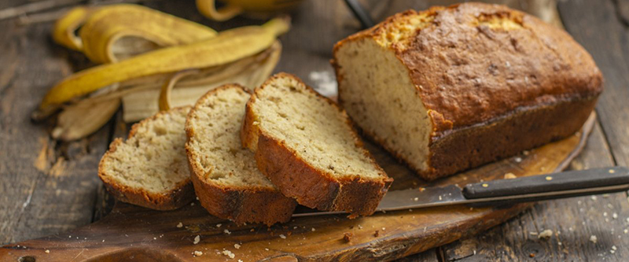

приготовление:
-
Разогреть духовку до 180 градусов. 150 гр. грецких орехов перебрать на отсутствие перегородок, затем порубите на крупные кусочки.
-
В большой миске смешать все сухие ингредиенты: 230 гр. муки, 120 гр. сахара, 1 ч.л. разрыхлителя, 1/4 ч.л. соды, 1/4 ч.л. соли, 1 ч.л. корицы. Добавить грецкие орехи. Хорошо перемешать.
-
Отдельно взбить венчиком 2 яйца, добавить к ним 400 гр. бананового пюре (4 крупных банана), 115 гр. растопленного сливочного масла (остуженного до комнатной температуры) и ванильный экстракт или ароматизатор. Хорошо перемешать.
-
Влить жидкие ингредиенты в сухие и, с помощью силиконовой лопатки, перемешать массу круговыми движениями снизу вверх до момента, как только мука увлажнится. Тесто получится комковатым. Форму для кекса смазать растительным маслом и присыпать мукой. Переложить тесто в форму и поставить в горячую духовку на средний уровень на 50-55 минут. Время выпекания зависит от размера формы: чем длиннее форма, тем ниже хлеб, и требуется меньше времени для выпекания. Готовность хлеба проверьте деревянной палочкой.
-
Готовый хлеб вынуть из духовки и дать постоять в форме 10 минут. После этого вынуть хлеб из формы и оставьте остывать на решетке.